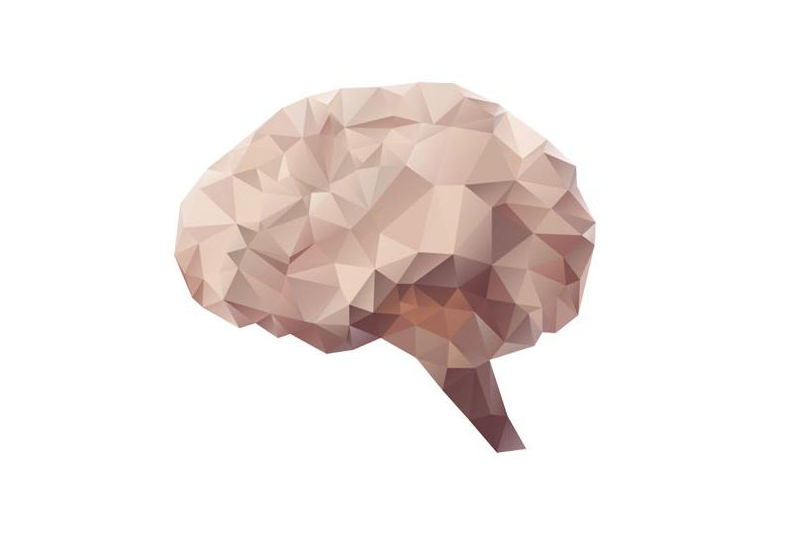

Computers open a whole new world for creativeness. Many artists are born from the applications that are made possible by it. Electronic Music and Digital Art could be considered as two of the most popular genre of this field.
Most of the popular music has some sort of electronic touch in it. Digital art can consist of manipulation of pictures by using different tools such as Photoshop or Lightroom. It also consists making of animation movies and such.
